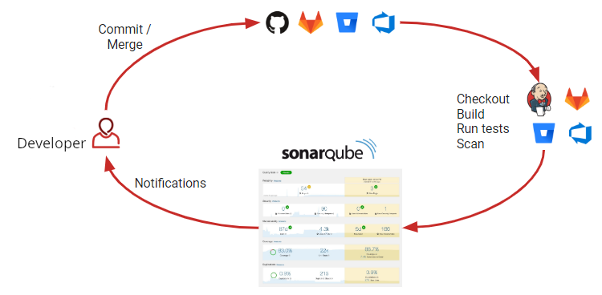
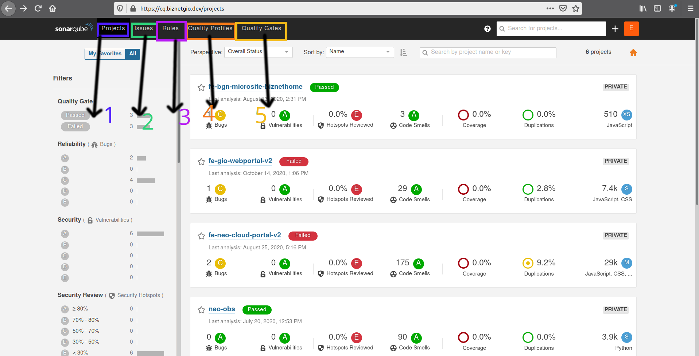
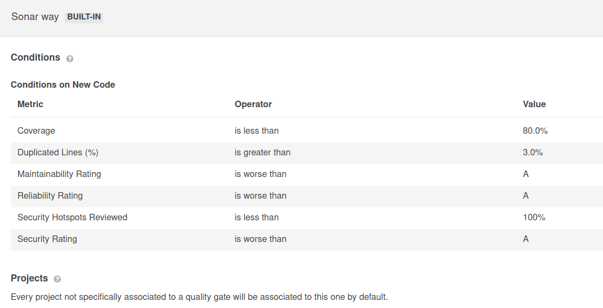
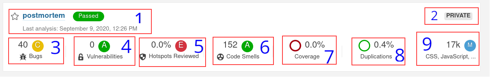

Code Analyzer
Sonarqube is third party opensource tools automatically analyze code and reporting some detect bugs, vulnerabilities, and code smells in your code.
Sonarqube workflow
This figure explain workflow how sonarqube works.

- Developer commit/merge their code to a version control system, example here we use git.
- Add a sonarqube scanner on test pipeline on git ci/cd, this will execute automatically.
- When test pipeline ready started, code will send to sonarqube service and generate a result statistics.
- Overview a project listed on dashboard, developer should attention of some bug report or any issues.
- Any known bugs or vulnerabilities, sonarqube give an advice to correct their code.
Overview Report Dashboard

1. Project Menu
Default list project will shown as homepage dashboard,this page overview result and general report of all project.
2. Issues
Issues will report here, some advice will given from sonarqube related what language code that you write.
3. Rules
This rules provide by sonarqube, consist of more programming language rules to detect our project and compare with standard code.
4. Quality Profiles
Sonarqube has built in bunch of rules base from programming language. Here we can explore convention code example to reduce or avoid vulnerabilities
5. Quality Grade
This page inform you pass criteria of project.
By default this built in from sonarqube, a project with status PASSED or FAILED measured from this list.

Overview Detail

- Informations of project name with measure criteria. Passed or failed is depend from quality grade.
- Project is private, just authenticate user can access it.
- Informations of bugs, reporting which should be attention to fix of bugs.
- Vulnerabilities, some potency for attacker or backdoor issue.
- Different with vulnerability, code consider with less safe need to reviewed.
- Code smells is inform you measure maintability project or any bad structure from standard code.
- Covarage test code on project
- Check duplicating code on project
- Composition programming language contain on your project
Grade Measurement
- RELIABILITY = A, B, C, D, E
- SECURITY = A, B, C, D, E
- SECURITY REVIEW = A, B, C, D, E
- MAINTAINABILITY = A, B, C, D, E
- COVERAGE = % Percentage
- DUPLICATE = % Percentage